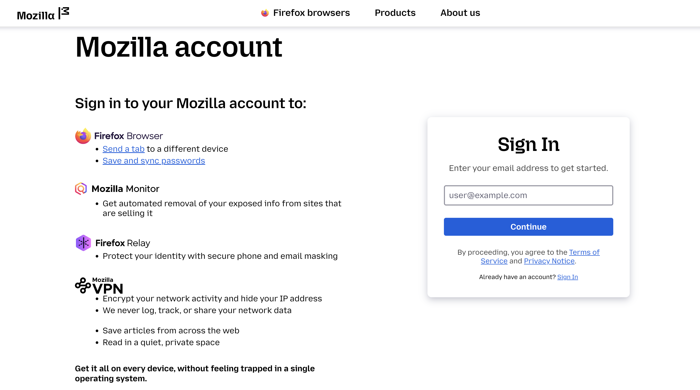
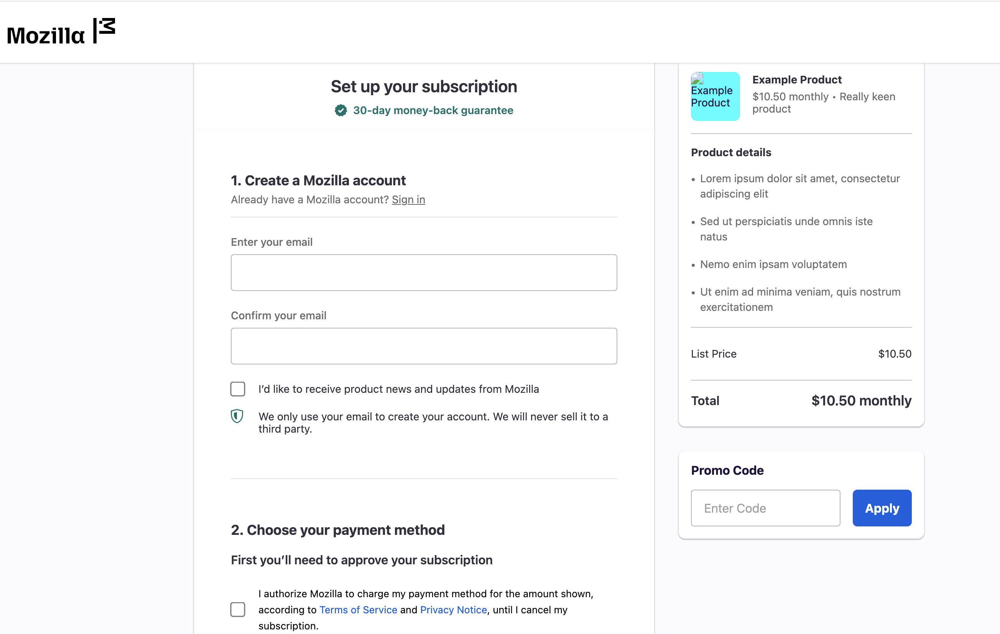
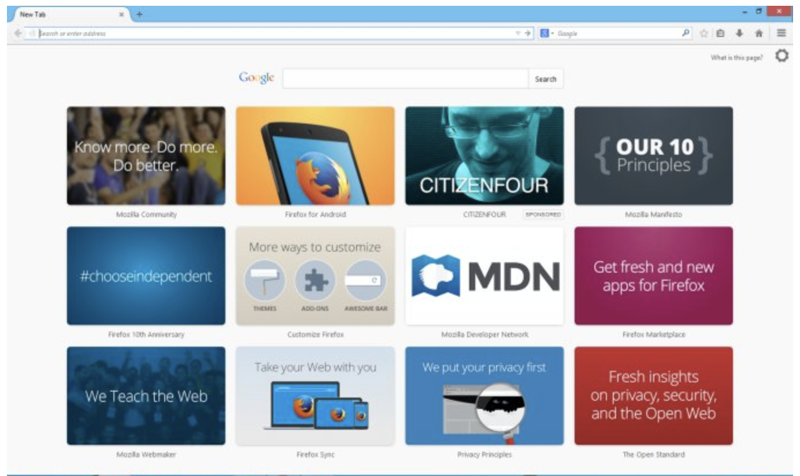

About Me
Automation Test Engineer | 12+ Years of Experience
I'm a results-driven Automation Test Engineer with experience in delivering high-impact, scalable testing solutions for web, mobile, and browser platforms. I specialize in building automation frameworks from the ground up, optimizing QA pipelines, and leading teams in Agile environments.With deep expertise in Playwright, Selenium, C#, Appium, Jenkins, and AWS, I’ve improved test coverage by 50% and cut testing time by 80% on large-scale projects like Mozilla Accounts. I bring a unique mix of hands-on technical skill, leadership, and a passion for quality that drives faster releases, fewer bugs, and stronger products.
My ResumeProjects
Mozilla | Open Source Projects:
Mozilla Account (formely FxA)
Mozilla Accounts (formerly FxA) is a secure login system powering access to Mozilla services like Firefox Monitor and VPN.
- Developed and automated end-to-end functional tests for MzA using Playwright, TypeScript, and JavaScript.
- Integrated continuous testing into the CI/CD pipeline with CircleCI, ensuring seamless user experiences across the Mozilla ecosystem.


Subscription Platform (Subplat)
A suite of features enabling users to subscribe to premium Mozilla services, while allowing Mozilla to manage payments, track subscriptions, and provide user support.
- Designed and executed comprehensive tests for Mozilla’s subscription platform, covering functional, integration, API, and end-to-end scenarios.
- Ensured secure, scalable, and accessible user experiences by validating payment flows, entitlement APIs, and UI across devices and languages.

Mozilla Tile Services
A set of features enabling users to discover clearly labeled sponsored content on the Firefox New Tab page, powered by Contile — a service that fetches display ads from paying or selected partners — while allowing Mozilla to maintain user control and partner only with privacy-compliant advertisers.
- Performed load testing for Contile using Locust and Python to ensure scalability and reliability under high traffic conditions
